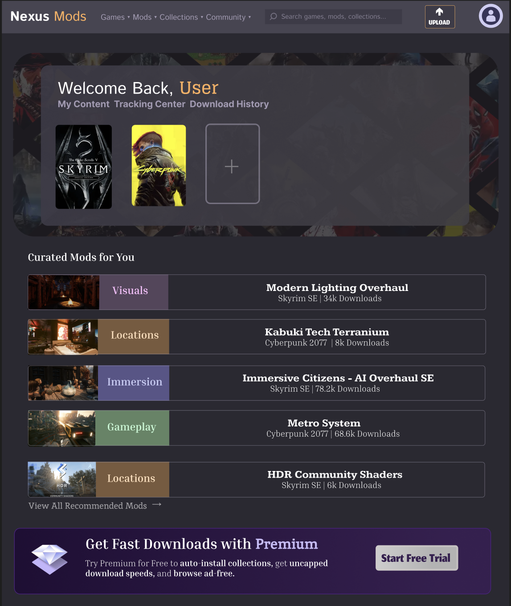
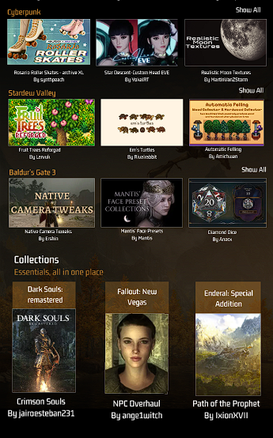
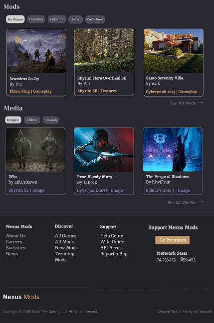
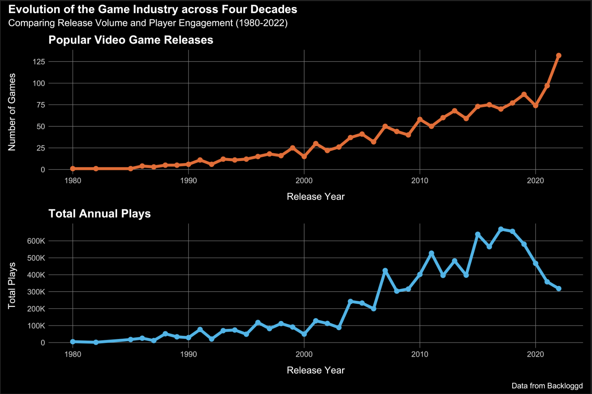

Projects
Low-fidelity Exploration: HUD Design
An interactive design project focused on reduction of cognitive load and player immersion through design decisions.
[01] Original Layout

[02] Optimized Iteration

▶ Read Research & Design Process
The Goal
- Fantasy RPGS are susceptible to visual bloat, given the amount of content that must be presented within limited space. This can burden the player's cognitive processing during fast-paced interaction. This low-fidelity project is designed to carefully incorporate vital indicators, inventory, quest markers, ability-mapping, and a minimap into a low-fidelity HUD design to to manage dense information and diegetic immersion.
Research & Approach
- I began researching various non-diegetic UI elements within video games, including typography, layout spacing, and color contrast to understand how to make a simplistic HUD effective.
- I analyzed common patterns across highly regarded video-game HUDs, such as Elden Ring, Baldurs Gate 3, and Ghosts of Tushima to analyze why certain elements were succesful in their respective genre. I determined clarity, contextual adaption, and visual hierarchy as critical UI elements.
Design
- I positioned the minimap in the top-right corner to supply spatial context and navigation at a glance, preventing fatigue caused by consistent map pausing.
- I added a small Portrait that clarifies the player's character choice and appearance, adjusting to their hit point status for greater immersion.
- The left slot displays quick-use items and emphasizes the equipped weapon to reduce cognitive friction when swapping gear mid-fight.
- An expandable quickbar was included for efficient magic selection and maximization of space.
- The center lock-on mechanic holds player focus, assists aim, and diminishes the risk of visual fatigue during fast-paced camera pivots.
- I removed the persistent upper quest indicator I included in my original design after finding it drew focus away from the environment.
- Health and mana bars visible only when relevant, reducing clutter and decreasing distraction.
Takeaways
- Player attention is a finite resource in fast-paced video game settings,cand UI components must be calibrated to prioritize fluid action over unecessary information. I had to deeply consider how quickly a player would be able to acknowledge each element.
- Thematic styling should be consistent and match the given genre, and ornamental design distracts from legibility. Layout clarity is crucial for polished user experience.
Redesign of the Nexus Mods' Front Page
A UX/UI redesign of the Nexus Mods front page to reduce visual clutter and prioritize content organization based on user reports.
High-Fidelity Mockup (Top)

High-Fidelity Mockup (Top)

High-Fidelity Mockup (Bottom)

High-Fidelity Mockup (Bottom)

▶ Read Research & Design Process
Qualitative Research
To gather information, I analyzed user discussions across public forums, including Reddit, Quora, and Nexus.
- Interface has poor navigation and extensive visual clutter due to extensive cards and large banners that increase scrolling time.
- Overexposure to specific features, such as collections crowd the webpage and take away from the tailored games, mods, and sharing users commonly seek.
- High volume of dense information and unused space, including large mod cards and empty side panels.
- The miniplayer with active advertisements is awkwardly positioned and distracting.
Key Insights
- Users struggle to find the core content without scrolling or leaving the main landing page.
- Visual noise evidently reduces user attention and engagement.
- Overall, the layout feels detached and largely fails to reflect the priorities of a returning Nexus user.
Psychological Design
- Popular games and curated content were grouped at the top, as many returning users visit the site searching for a specific title or personalized mods. I implimented curated mods in convenient, rectangular strips that immediately allowed user access to key information.
- I kept the dropdown menu and hero banner the same across both designs, adjusting sizing and opacity to better fit the final layout.
- In the final design, the trending section was changed into a clickable button instead of a standalone grid to avoid crowding the display with mod cards, a balance I struggled to find in my initial redesign.
- Collections were kept compact, originally using a scroll feature to maximize space and reduce cognitive load.
- The orange and grey color scheme was lightly reduced to improve readability. I gave the background a softer, purple-hued black and added greater color variation throughout to combat eye-strain.
- I relocated advertisements to a small strip and removed corner miniplayer to preserve focus on the main content and decrease inattentional blindness.
Takeaways
- Proper usability research and testing is necessary to clarify interface weak points and make improvements.
- Designs choices should efficiently reflect the priorities of the main userbase. This was a priority, and guided the improved section placement in my final design.
- Frustration can be minimized through strategic placement of core content, search bars, sliders, and advertisements. Proper use of space ensures the users attention is seamlessly guided across the page.
- Secondary elements, such as advertisements or promoted features, should not visibly overpower the main purpose of the website. I found this to be especially true for a landing page.
Dynamic Analysis of Global Space Missions
Team-based data analysis of space missions ranging from 1957-2022, determining patterns in mission success, rocket durability, and launch outcomes.
View R Code
## filtering rocket data
success_by_rocket <-
space_data |>
select(Rocket, MissionStatus
) |>
mutate(
success = MissionStatus == "Success"
) |>
group_by(Rocket) |>
summarize(
success_rate = mean(success),
missions = n()
) |>
filter(missions >= 50) |>
arrange(desc(success_rate)) |>
## producing bar graph
ggplot(
aes(
x = Rocket,
y = success_rate,
fill = missions)
) +
geom_col(color = "black") +
scale_y_continuous(
limits = c(0, 1),
breaks = seq(0, 1, by = 0.1),
labels = scales::percent
) +
coord_flip() +
scale_fill_gradient(
low = "royalblue",
high = "midnightblue"
) +
labs(
x = "Rocket Type",
y = "Mission Success Rate",
fill = "Total Missions",
title = "Rocket Type in Comparison to Mission Success Rate",
subtitle = "Partial Failures Counted as Failures",
caption = "Data from the Space Missions dataset by Saikat Panja."
)
success_by_rocket

Role
- Created a visualization comparing rocket type and mission success rate.
- Showed reliability trends of rocket types over time.
- Standardized code.
- Interpreted and communicated results in text.
Player Engagement Analysis
An examination of Backloggd video game data across four decades, measuring player behavioral dynamics, consistent media trends, dominating genres, and overall user engagement.
View R Code
# Parsed dates
games_parsed <- games |>
mutate(
release_date = mdy(`Release Date`),
year = year(release_date)
)
# Filtered NA & counted releases before 2022
release_year <- games_parsed |>
filter(!is.na(year)) |>
count(year) |>
filter(year <= 2022)
# Game count plot
game_count <- ggplot(release_year, aes(x = year, y = n)) +
geom_line(color = "#F26522", linewidth = 2) +
geom_point(color = "#F26522", size = 3) +
scale_y_continuous(breaks = seq(0, 125, by = 25)) +
labs(
title = "Popular Video Game Releases",
x = "Release Year",
y = "Number of Games"
)
# Standardized total plays data
total_plays_data <- games_parsed |>
filter(!is.na(year) & year <= 2022) |>
mutate(
plays_clean = as.numeric(gsub("K", "", Plays)) * ifelse(grepl("K", Plays), 1000, 1)
) |>
group_by(year) |>
summarize(
total_annual_plays = sum(plays_clean, na.rm = TRUE)
)
# Total plays plot
total_plays <- ggplot(total_plays_data, aes(x = year, y = total_annual_plays)) +
geom_line(color = "#00B7EB", linewidth = 2) +
geom_point(color = "#00B7EB", size = 3) +
scale_y_continuous(
breaks = seq(0, 600000, by = 100000),
labels = scales::label_number(scale_cut = scales::cut_short_scale())
) +
labs(
title = "Total Annual Plays",
x = "Release Year",
y = "Total Plays"
)
# Patchwork comparison layout & theme
compared_plots <- game_count / total_plays
compared_plots +
plot_annotation(
title = "Evolution of the Game Industry across Four Decades",
subtitle = "Comparing Release Volume and Player Engagement (1980-2022)",
caption = "Data from Backloggd"
) &
theme_minimal() &
theme(
plot.background = element_rect(fill = "black", color = "black"),
panel.background = element_rect(fill = "black"),
panel.grid.major = element_line(color = "grey50", linewidth = 0.3),
panel.grid.minor = element_blank(),
text = element_text(color = "white", size = 14),
plot.title = element_text(face = "bold", color = "white"),
axis.text = element_text(color = "grey80"),
axis.title.x = element_text(color = "white", margin = margin(t = 12)),
axis.title.y = element_text(color = "white", margin = margin(r = 15))
)

Role
- Produced two line graphs to examine video game trends over time and compared with patchwork.
- Aided written communication of results.
- Implemented a consistent, engaging color scheme.
Technical & Methodological Skills
- Languages & Software: R (tidyverse, ggplot2, dplyr), Python (Pandas, NumPy, Matplotlib), Foundational HTML/CSS
- Tools: Figma, RStudio, Excel, Google Colab, Git/GitHub
- Research Methodology: Cognitive Workload Optimization, Usability Evaluation, Information Architecture, Hypothesis Testing, Inferential Statistics, Data Cleaning
Email: karaarippe@gmail.com
Linkedin: Kara-Rippe
Resume: View Resume (PDF)